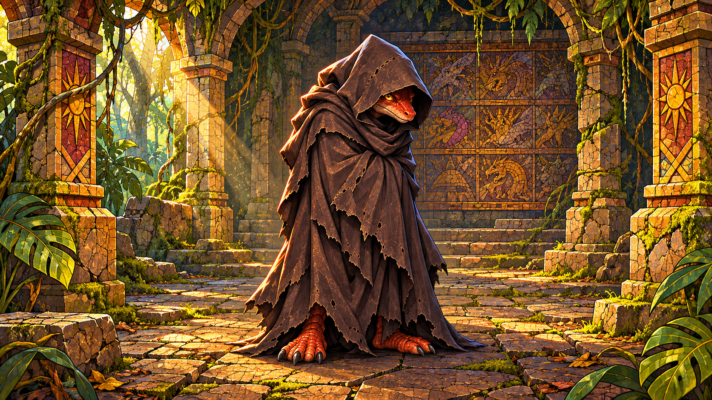

PIANO I · TEMPIO DI SCINTILLA
PUZZACINTA
35%

«Cinque domande… cinque risposte. Poi, chi lo sa?»
IL VIANDANTE DEGLI ENIGMI
Le cinque risposte
5RIMASTE
Le domande riguarderanno esclusivamente il Piano I.
Anteprima grafica: il collegamento all'IA sarà aggiunto in seguito.
IL TERZO FRAMMENTO
Le cinque risposte sono terminate. Puzzacinta lascia il terzo pezzo di mosaico e svanisce.